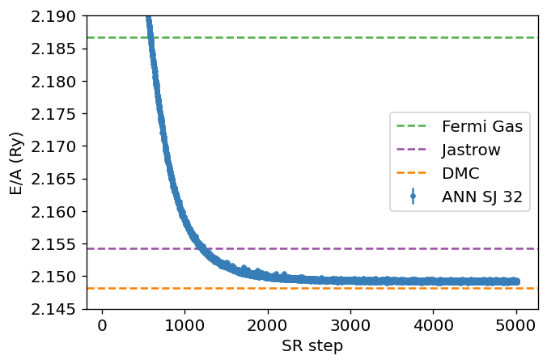

The main emphasis is to give you a short and pedestrian introduction to the whys and hows we can use (with several examples) machine learning methods and quantum technologies in physics. And why this could (or should) be of interest. I will also try to link to potential job possibilities and educational activities.
If you wish to have a critical read on AI/ML from a societal point of view, see Kate Crawford's recent text Atlas of AI
Here: with AI/ML we intend a collection of machine learning methods with an emphasis on statistical learning and data analysisAn important and emerging field is what has been dubbed as scientific ML, see the article by Deiana et al Applications and Techniques for Fast Machine Learning in Science, arXiv:2110.13041
The authors discuss applications and techniques for fast machine learning (ML) in science – the concept of integrating power ML methods into the real-time experimental data processing loop to accelerate scientific discovery. The report covers three main areas
Machine learning is an extremely rich field, in spite of its young age. The increases we have seen during the last three decades in computational capabilities have been followed by developments of methods and techniques for analyzing and handling large date sets, relying heavily on statistics, computer science and mathematics. The field is rather new and developing rapidly.
Popular software packages written in Python for ML are
and more. These are all freely available at their respective GitHub sites. They encompass communities of developers in the thousands or more. And the number of code developers and contributors keeps increasing.
Not all the algorithms and methods can be given a rigorous mathematical justification, opening up thereby for experimenting and trial and error and thereby exciting new developments.
A solid command of linear algebra, multivariate theory, probability theory, statistical data analysis, optimization algorithms, understanding errors and Monte Carlo methods is important in order to understand many of the various algorithms and methods.
Job market, a personal statement: A familiarity with ML is almost becoming a prerequisite for many of the most exciting employment opportunities. And add quantum computing and there you are!
The approaches to machine learning are many, but are often split into two main categories. In supervised learning we know the answer to a problem, and let the computer deduce the logic behind it. On the other hand, unsupervised learning is a method for finding patterns and relationship in data sets without any prior knowledge of the system. Some authours also operate with a third category, namely reinforcement learning. This is a paradigm of learning inspired by behavioural psychology, where learning is achieved by trial-and-error, solely from rewards and punishment.
Another way to categorize machine learning tasks is to consider the desired output of a system. Some of the most common tasks are:
The large amount of degrees of freedom pertain to both theory and experiment in the physical sciences. With increasingly complicated experiments that produce large amounts data, automated classification of events becomes increasingly important. Here, deep learning methods offer a plethora of interesting research avenues.
Almost every problem in ML and data science starts with the same ingredients:
We seek to minimize the function \( \mathcal{C} (\mathbf{x}, f(\mathbf{\alpha})) \) by finding the parameter values which minimize \( \mathcal{C} \). This leads to various minimization algorithms. It may surprise many, but at the heart of all machine learning algortihms there is an optimization problem.
Given a hamiltonian \( H \) and a trial wave function \( \Psi_T \), the variational principle states that the expectation value of \( \langle H \rangle \), defined through
$$ \langle E \rangle = \frac{\int d\boldsymbol{R}\Psi^{\ast}_T(\boldsymbol{R})H(\boldsymbol{R})\Psi_T(\boldsymbol{R})} {\int d\boldsymbol{R}\Psi^{\ast}_T(\boldsymbol{R})\Psi_T(\boldsymbol{R})}, $$is an upper bound to the ground state energy \( E_0 \) of the hamiltonian \( H \), that is
$$ E_0 \le \langle E \rangle. $$In general, the integrals involved in the calculation of various expectation values are multi-dimensional ones. Traditional integration methods such as the Gauss-Legendre will not be adequate for say the computation of the energy of a many-body system. Basic philosophy: Let a neural network find the optimal wave function
Machine Learning and the Deuteron by Kebble and Rios and Variational Monte Carlo calculations of \( A\le 4 \) nuclei with an artificial neural-network correlator ansatz by Adams et al.
Adams et al: $$ \begin{align} H_{LO} &=-\sum_i \frac{{\vec{\nabla}_i^2}}{2m_N} +\sum_{i < j} {\left(C_1 + C_2\, \vec{\sigma_i}\cdot\vec{\sigma_j}\right) e^{-r_{ij}^2\Lambda^2 / 4 }} \nonumber\\ &+D_0 \sum_{i < j < k} \sum_{\text{cyc}} {e^{-\left(r_{ik}^2+r_{ij}^2\right)\Lambda^2/4}}\,, \label{_auto1} \end{align} $$where \( m_N \) is the mass of the nucleon, \( \vec{\sigma_i} \) is the Pauli matrix acting on nucleon \( i \), and \( \sum_{\text{cyc}} \) stands for the cyclic permutation of \( i \), \( j \), and \( k \). The low-energy constants \( C_1 \) and \( C_2 \) are fit to the deuteron binding energy and to the neutron-neutron scattering length
An appealing feature of the neural network ansatz is that it is more general than the more conventional product of two- and three-body spin-independent Jastrow functions
$$ \begin{align} |\Psi_V^J \rangle = \prod_{i < j < k} \Big( 1-\sum_{\text{cyc}} u(r_{ij}) u(r_{jk})\Big) \prod_{i < j} f(r_{ij}) | \Phi\rangle\,, \label{_auto2} \end{align} $$which is commonly used for nuclear Hamiltonians that do not contain tensor and spin-orbit terms. The above function is replaced by a four-layer Neural Network.

Jane Kim, Bryce Fore, Alessandro Lovato and MHJ, in preparation

When you hear phrases like predictions and estimations and correlations and causations, what do you think of? May be you think of the difference between classifying new data points and generating new data points. Or perhaps you consider that correlations represent some kind of symmetric statements like if \( A \) is correlated with \( B \), then \( B \) is correlated with \( A \). Causation on the other hand is directional, that is if \( A \) causes \( B \), \( B \) does not necessarily cause \( A \).
The above concepts are in some sense the difference between old-fashioned machine learning and statistics and Bayesian learning. In machine learning and prediction based tasks, we are often interested in developing algorithms that are capable of learning patterns from given data in an automated fashion, and then using these learned patterns to make predictions or assessments of newly given data. In many cases, our primary concern is the quality of the predictions or assessments, and we are less concerned about the underlying patterns that were learned in order to make these predictions.
Physics based statistical learning points however to approaches that give us both predictions and correlations as well as being able to produce error estimates and understand causations. This leads us to the very interesting field of Bayesian statistics.
Bayes' theorem
$$ p(X\vert Y)= \frac{p(X,Y)}{\sum_{i=0}^{n-1}p(Y\vert X=x_i)p(x_i)}=\frac{p(Y\vert X)p(X)}{\sum_{i=0}^{n-1}p(Y\vert X=x_i)p(x_i)}. $$The quantity \( p(Y\vert X) \) on the right-hand side of the theorem is evaluated for the observed data \( Y \) and can be viewed as a function of the parameter space represented by \( X \). This function is not necessarily normalized and is normally called the likelihood function.
The function \( p(X) \) on the right hand side is called the prior while the function on the left hand side is the called the posterior probability. The denominator on the right hand side serves as a normalization factor for the posterior distribution.
A good read on folding/unfolding is An Unfolding Method for High Energy Physics Experiments by Volker Blobel
See notebook details and examples of simple data reconstructed with Gaussian processes.
Predictions made with eleven global mass model and Bayesian model averaging

Electrons on superfluid helium represent a promising platform for investigating strongly-coupled qubits.
Therefore a systematic investigation of the controlled generation of entanglement between two trapped electrons under the influence of coherent microwave driving pulses, taking into account the effects of the Coulomb interaction between electrons, is of significant importance for quantum information processing using trapped electrons.